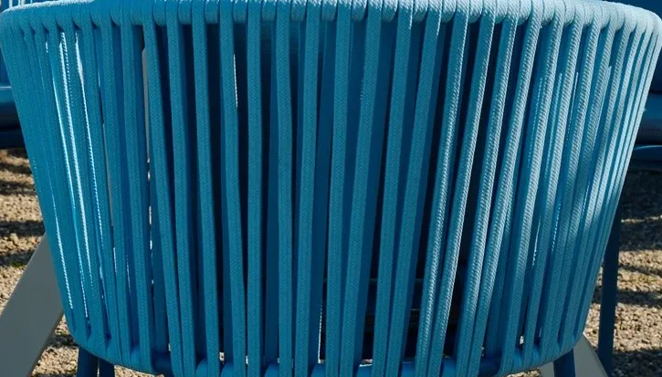
Stuhlblau
#113D88
Geflecht der Terrassenstühle in der Sonne
Die Hausregeln · Bottighofen am Bodensee
Das Zeichen mit den zwei Zeigern, die Versalien der Wortmarke und die Farben des Hafens: alles hier kommt vom Haus. Die Farbwelt ist «Stuhl und See», das Blau der Terrassenstühle und der Himmel über dem See.
Das Zeichen
Das Logo des Hauses ist ein gebrochener Kreis mit zwei Zeigern und zwei Kugeln; die Nabe der Zeiger ist zugleich das Ö im Namen. Was die Zeiger meinen, sagt das Haus nirgends, deshalb wird hier nichts hineingelesen. Die Schrift ist weggelassen, der Rest aus dem Original als Vektor gezogen.
Wortmarke und Titelschrift
Die Wortmarke ist in Open Sans gesetzt. Neben sie gelegt wurden zehn freie Schriften, Buchstabe für Buchstabe: Open Sans 400 deckt sich zu 95 Prozent, die nächste andere Schrift zu 88. Die Sperrung ist am Wort «WIRTSCHAFT» gemessen.
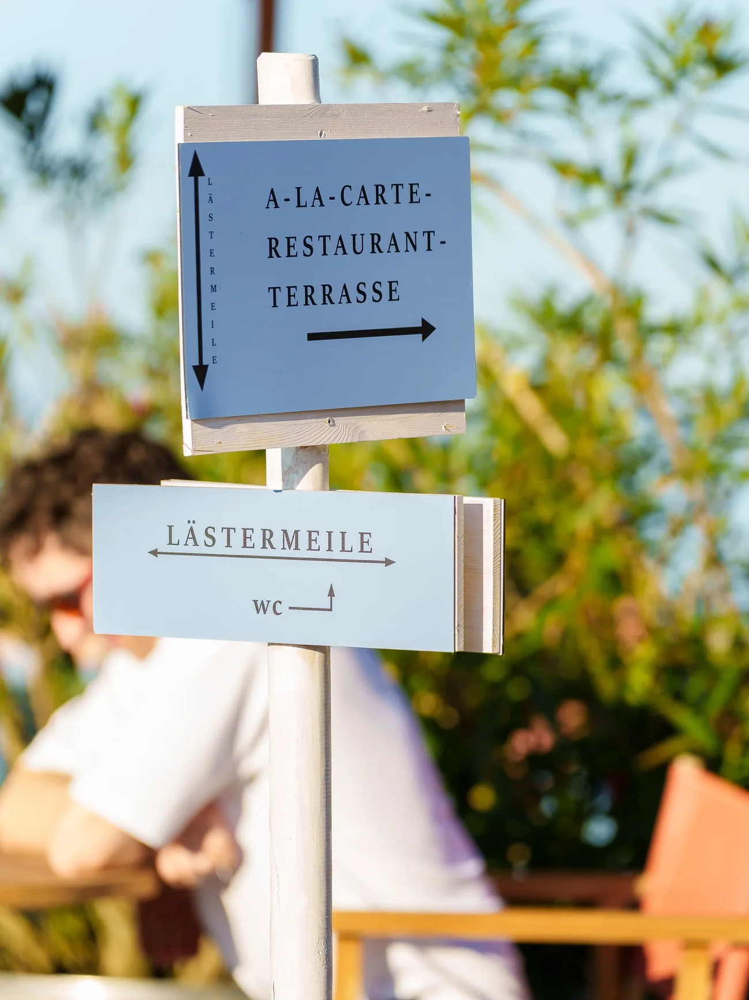
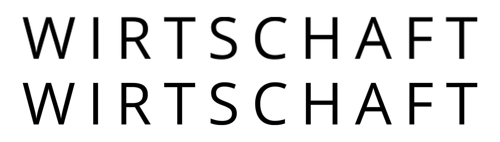
Wirtschaft am Schlössli
Oben das Wort aus dem Logo, darunter Open Sans 400 mit 0,205 em Sperrung · Zeile ganz unten: Open Sans 400, 0,3 em, als Name
Schriften
Titel stehen in den Versalien der Wortmarke, weit gesperrt, nie fett, nie kursiv. Betont wird über die Farbe. Gelesen wird in einer ruhigen Grotesk, Etiketten und Knöpfe stehen in einer Mono.
Titel · Open Sans 400, Versalien, 0,16 em
Hier erwartet Sie eine kulinarische Reise in die Welt der mediterranen Küche, die mit frischen, hochwertigen Zutaten und kreativen Rezepten zubereitet wird.
Die Karte
Farben
Jede Farbe des Hauses ist in einem Foto des Hauses gefunden: an den Stühlen der Terrasse, am See, an den Sonnenschirmen, am Teller, an den Fliesen der Bar. Die Blautöne stehen so, wie die Website sie trägt: Ton in Ton auf das Blau des Platztellers gestimmt.
Gemessen am Startbild der Seite, an der Terrasse unter den Platanen und an einem Teller.

#113D88
Geflecht der Terrassenstühle in der Sonne
#B9C5C4
Wasser vor den Alpen am Mittag (Startbild der Seite)
#A2B6CF
Himmel über dem See, ebd.
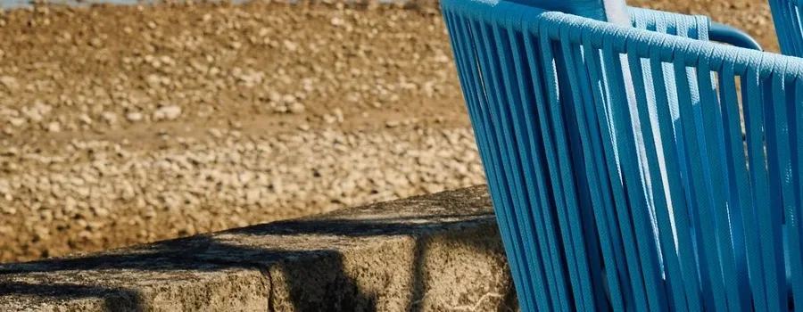
#AD8A5A
Sand und Steine am Ufer in der Sonne, ebd.
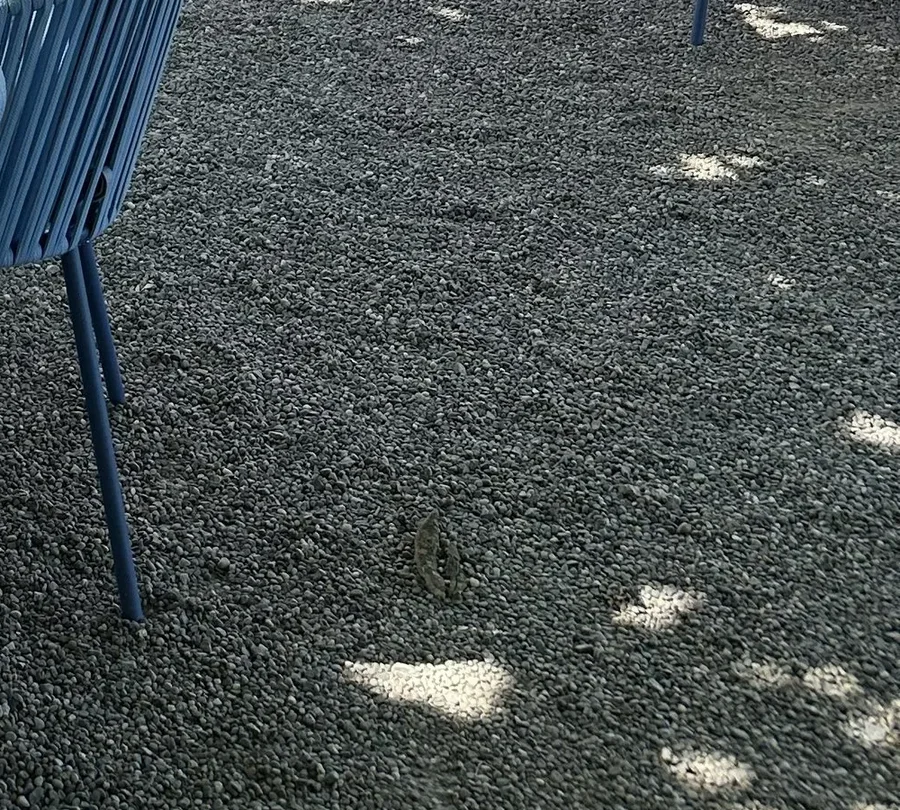
#747B7B
Kies unter den Tischen, Licht durch die Platanen
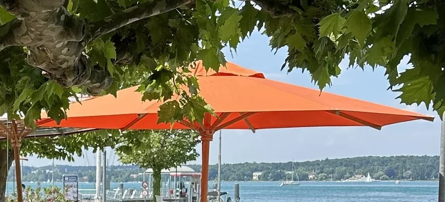
#FD9964
Sonnenschirme der Terrasse, Stoff im Gegenlicht
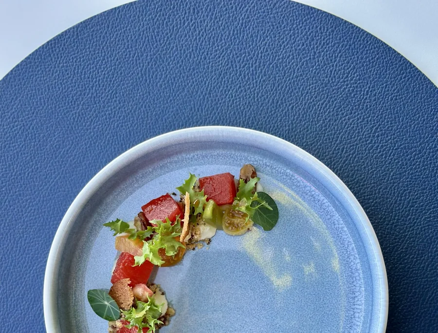
#436496
Blauer Platzteller unter dem Gericht «Anguria»
Gemessen an der Terrasse nach Sonnenuntergang.
#D19E68
Himmel über dem Ufer nach Sonnenuntergang
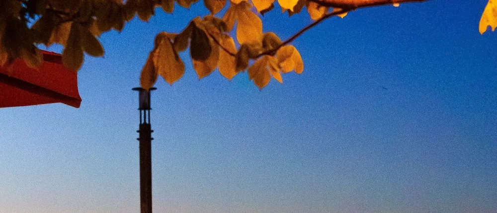
#4D7DB9
Himmel über dem See am Abend, ebd.
#F7AD04
Lichter in der Platane über der Terrasse, ebd.
Gemessen an den Zementfliesen, die auf der Seite neben der Bar stehen.
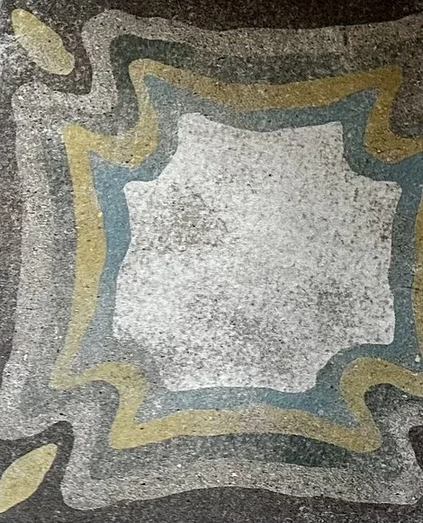
#424340
Zementfliesen an der Bar, Grund der Fliesen
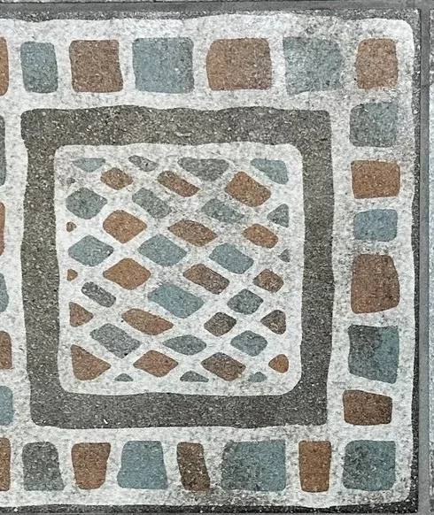
#D1D3D1
helle Felder der Fliesen, ebd.
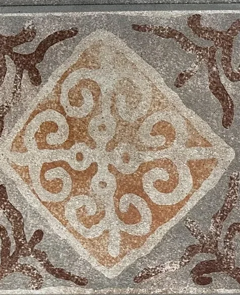
#957458
Ornament der zweiten Fliese, ebd.
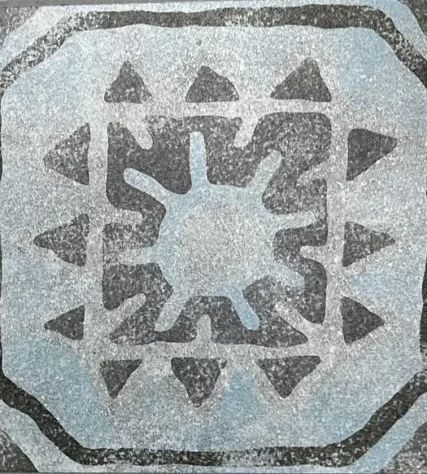
#A1A9B7
Grund der vierten Fliese, ebd.
Die Farbwelt
Der Mittag am Wasser: das Blau der Terrassenstühle als dunkle Fläche, der Himmel über dem See aufgehellt als helle Fläche und als Linie, Schirmrot nur als Punkt. Ohne Gold und ohne Grün. Seit dem 19. Oktober 2026 trägt die Website die Farbwelt «Ton in Ton»: alle Blautöne um 21° auf das Blau des Platztellers gedreht, die warmen Töne bleiben.
Die Farbwelt des Hauses
Das Blau der Terrassenstühle als dunkle Fläche, der Himmel über dem See aufgehellt als helle und als Linie und Zeichen. Schirmrot nur als Punkt.
Logo richtig und falsch
Der Ton
Willkommen in der Wirtschaft am Schlössli · Direkt im Hafen von Bottighofen · mit Blick aufs Wasser und die Alpen · Die schönste Terrasse am Bodensee · kulinarische Reise in die Welt der mediterranen Küche · junges Küchenteam · frischer Wind · herzliche Gastfreundschaft · Lästermeile · Tapas durchgehend · Zur Stärkung & Süsses · Banketts & Gruppen · Tavolata oder gesetztes Menue · unkompliziert · in Ruhe besprechen · Reservation · klassisch wie bei der italienischen Oma
kulinarische Highlights · Genuss pur · ein Fest für die Sinne · Gourmet-Tempel · unvergesslich · Verwöhnprogramm · Geheimtipp · das scharfe S statt ss · Du-Ansprache · Superlative · Ausrufezeichen
Die Hausregeln
Für jeden Aushang, jede Karte, jeden Beitrag und jede Mail des Hauses, ob aus dem Team oder von einer Agentur.
Das Haus siezt seine Gäste, herzlich und ohne Umstände, so wie es auf seiner Seite schreibt: «Mehr Wirtschaft, weniger feine Pinkel». Nie werblich laut.
Immer ss, nie das scharfe S; Anführungszeichen «…». Zeiten wie auf der Seite des Hauses: «Donnerstag - Montag», «11:30 Uhr - 23:00 Uhr».
Titel kurz, höchstens fünf Wörter, in gesperrten Versalien wie die Wortmarke, in Open Sans 400. Keine Ausrufezeichen im Titel.
Betont wird mit Seehimmel auf Dunkel und Seehimmel tief auf Hell, nie fett und nie kursiv.
Gerichte stehen so, wie sie auf der Karte stehen (THON, CAVATELLI, TORTELLONI), mit der Zeile darunter; nie übersetzt, nie geglättet.
Preise stehen auf den Karten des Hauses. Aushänge, Einladungen und Beiträge nennen keine Preise.
Nacht, Tief und Stuhlblau tragen die dunklen Flächen, immer mit dem Punktraster der Zeiger. Seehimmel nur für Zeichen, Linien und kleine Zeilen.
Das Rot der Sonnenschirme steht höchstens als Punkt: eine Markierung, ein Stempel, nie als Fläche und nie als Schrift.
Fotos zeigen, was der Gast vorfindet: Hafen, Terrasse, See, Teller, Bar, Team. Ansichtskarten nur Hafen, Terrasse oder See, Titel ist der Ort.
Das Haus heisst «Wirtschaft am Schlössli» und liegt direkt im Hafen von Bottighofen am Bodensee. Kein Hotel, keine Zimmer. Die Taverne zum Schäfli in Wigoltingen steht höchstens als Verweis auf das Schwesterhaus.
Die eigene Welt
Die Wirtschaft am Schlössli ist die Welt eines Hafens am Bodensee: blaue Stühle auf Kies unter Platanen, das Wasser bis zu den Alpen, eine Bar mit alten Zementfliesen, die von drinnen nach draussen führt, und ein Logo mit zwei Zeigern, dessen Nabe das Ö im Namen ist.
Der Ort hat ein langes Gedächtnis mit Augenzwinkern: Ende des 17. Jahrhunderts setzte Hans Conrad Hafen im «Haus am See» einen Wirt als Pächter ein, der die Schiffsleute bewirtete, und hängte statt eines Wirtshausschilds einen Besen heraus; 1699 musste er sich der Tagsatzung fügen. Heute ist die Taverne der Familie die Schwester in Wigoltingen.
Die Seite nimmt den Horizont des Sees als Ordnung, eine feine Linie, die über die ganze Breite läuft und an der Bild und Titel sitzen, und die Zeiger als einziges Zeichen.